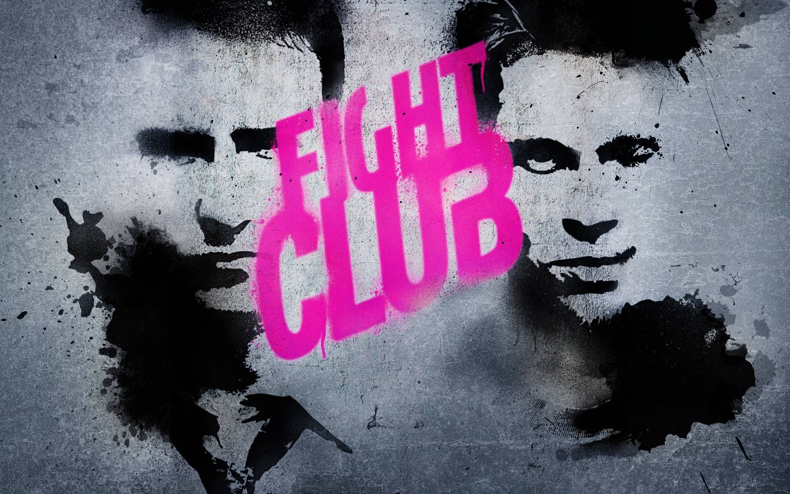
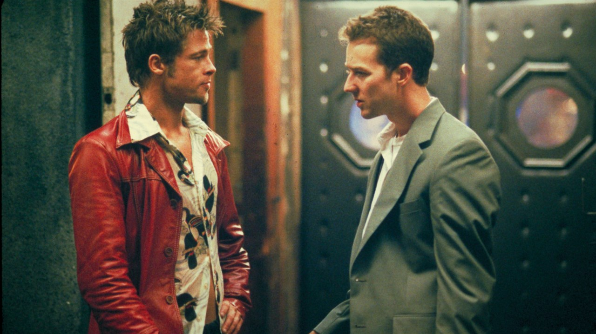

| Megjelenés |
|---|
| A Harcosok klubja 1999-ben bemutatott amerikai filmdráma David Fincher rendezésében. Chuck Palahniuk azonos című regényének adaptációja. A forgatókönyvet Chuck Palahniuk és Jim Uhls írta. A főszereplők Edward Norton, Brad Pitt és Helena Bonham Carter. Szerepel az 1001 film, amit látnod kell, mielőtt meghalsz című könyvben. |

| Rendező |
|---|
| A Harcosok klubja 1999-ben bemutatott amerikai filmdráma David Fincher rendezésében. David Leo Fincher (Denver, Colorado, 1962. augusztus 28. –) BAFTA-, Golden Globe- és négyszeres Primetime Emmy-díjas amerikai filmrendező és videóklip-készítő. Gyakran fellelhetők sajátos stílusjegyei, mint például a sötét, misztikus hangulat, leginkább a Hetedik, a Harcosok klubja, a Zodiákus és a Benjamin Button különös élete című filmjeiben. |
| Színészek |
|---|
| Edward Norton-> "A narrátor" Brad Pitt-> "Tyler Durden" Helena Bonham Carter-> "Marla Singer" Meat Loaf-> "Robert Paulson" |

| Értékelések |
|---|
| A filmet sok helyen pozitív reakcióval fogadták. Az "IMDb" oldalán 8.8/10-es értékelést kapott. Sok helyen az egyik legjobb filmként emlegetik, gyönyörű zenékkel, látvánnyal és színészekkel. |